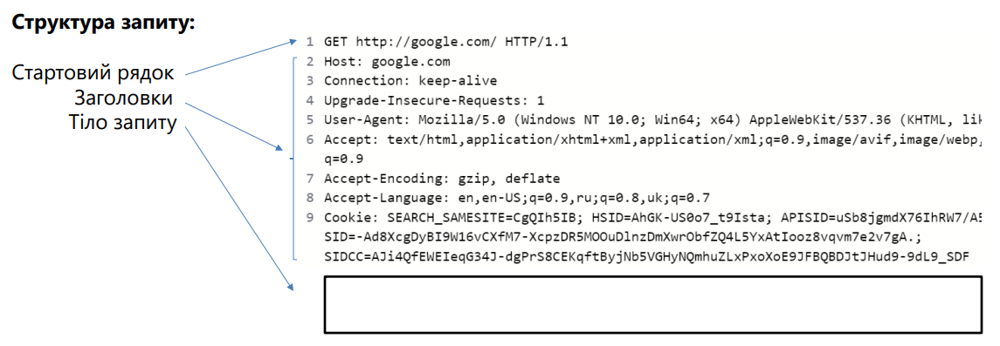
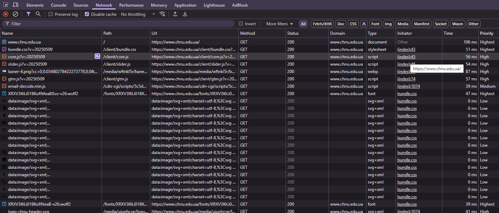

HTTP (HyperText Transfer Protocol) - протокол прикладного рівня передачі даних, спочатку - у вигляді гіпертекстових документів у форматі HTML. Нині використовується для передачі довільних даних.
Для аналізу HTTP-запиту та відповіді можна використовувати вбудований інструмент розробки у браузері (вкладка Network) або окремими програмами, наприклад, Telerik Fiddler, Postman, Wireshark.
AJAX (Asynchronous JavaScript and XML) – термін, що визначає мережевий запит, зроблений за допомогою JavaScript коду.
fetch() – сучасний варіант створення мережевих запитів. Цей метод повертає promise, що полегшує організацію коду обробки запиту, оскільки всі мережні запити за замовчуванням виконуються асинхронно.
let promise = fetch (url, [options]);
url – URL для надсилання запиту
options – об'єкт, який описує додаткові параметри: HTTP метод, заголовки тощо.
Результат, пов'язаний із promise, який повертає функція fetch — вбудований клас Response, який надає кілька методів до роботи з тілом відповіді.
Всі методи повертають Promise з результатом, отриманим з HTTP тіла відповіді:Для визначення методу HTTP при використанні методу fetch в об'єкті опцій, який передається другим параметром, потрібно вказати властивість методу з рядковим значенням, що відповідає потрібному методу HTTP:
fetch(url, {
method: 'POST'
})
Promise, який повертається fetch, не переходить у стан rejected, якщо сервер повернув статус коду помилки 4хх або 5хх. Для перевірки відповіді сервера слід використовувати властивість об'єкта response.
Метод fetch не передає на сервер cookie, доки не буде змінено значення параметра credentials.
Гарною практикою при написанні коду, що працює асинхронно, є відображення індикатора асинхронної операції (користувач буде розуміти, що сторінка виконує якусь дію, а не зависла) та надання можливості скасувати асинхронну операцію (особливо якщо операція може виконуватись тривалий час).
Для скасування запиту мережі, запущеного через метод fetch, використовується вбудований конструктор AbortController. Значення властивості signal об'єкта, створеного через цей конструктор, потрібно передати як властивість signal в об'єкт налаштувань функції fetch.
При скасуванні асинхронної операції необхідно обробити виняток, який буде викинуто в promise, пов'язаному з асинхронною операції